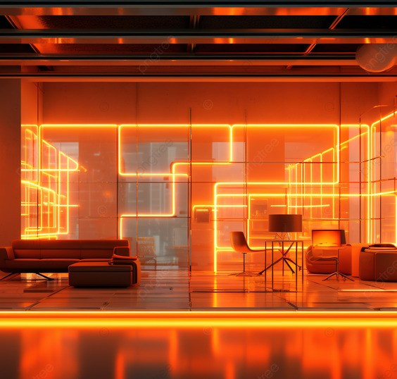
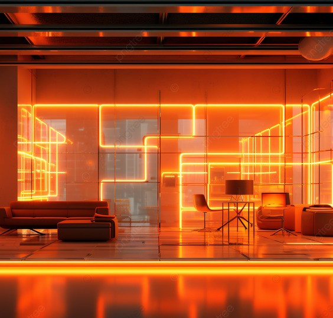

Motivation
Multiplane Image is an efficient 2.5D scene representation that allows for depth-aware editing.
However, when directly applied in the pixel space, it struggles to model the accurate foreground and
background scene interactions, particularly in terms of scene lighting, color harmonization,
and shadow generation (as shown below). To address this, our approach leverages the rich image generation
priors from pretrained image diffusion models via MDF guidance. This enables depth-consistent, realistic
scene compositions while preserving details in foreground and background regions.
Approach
We introduce Multiplane Diffusion Features (MDF), a multiplane representation embedded in the feature space of the
denoising U-Net within diffusion models. MDF is a highly expressive representation and enables precise control over
the generated image. However, directly editing the MDF during generation can push the latents outside the original
distribution, resulting in unnatural editing results. To address this, we propose a softer way to edit the diffusion
latents with MDF guidance, where the diffusion latents are progressively steered toward the desired edit at each
denoising step.
Depth-Aware Scene Composition
Our method generates realistic depth-aware scene compositions with natural illumination interactions and preserving the foreground and background conents.
Hover over the background images to compose the scene with selected background image.
[Please wait for a few minutes to load all the images]
Output

Scene Relighting
Our method can also be used for scene relighting, where we want to relight the foreground scene based on the background illumination.
Hover over the background image to relight the foreground image in the same illumination.
[Please wait for a few minutes to load all the images]
Depth-Aware Object Placement
Given a single object image, our method can realistically insert the object at a precise depth, with natural blending with scene content, color harmonization, and appropriate shadows.
Hower over the object thumbnail image to insert it in the scene.
Placing Object at different locations
Hover over the image to move the placed object in the scene.


 
